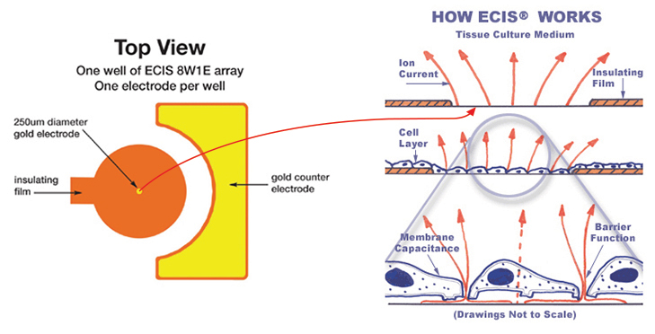
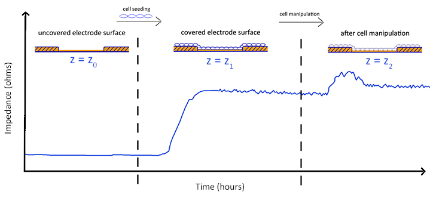

ECIS® (Electric Cell-substrate Impedance Sensing) is a real-time, label-free, impedance-based method to study the activities of cells grown in tissue culture. These include morphological changes, cell locomotion, and other behaviors directed by the cell’s cytoskeleton. This impedance-based cell monitoring technology was invented by Drs. Ivar Giaever and Charles R. Keese who founded Applied BioPhysics, Inc.
The ECIS® approach has been applied to numerous investigations including measurements of the invasive nature of cancer cells, the barrier function of endothelial cells, in vitro toxicity testing as an alternative to animal testing, and signal transduction involving GPCR’s for modern drug discovery.
How to Quantify Cell Behavior
Cell function modulates cell morphology. ECIS is capable of detecting and quantifying morphology changes in the sub-nanometer to micrometer range. In ECIS a small alternating current (I) is applied across the electrode pattern at the bottom of the ECIS arrays (direct current cannot be used). This results in a potential (V) across the electrodes which is measured by the ECIS instrument. The impedance (Z) is determined by Ohm’s law Z = V/I.
When cells are added to the ECIS Arrays and attach to the electrodes, they act as insulators increasing the impedance. As cells grow and cover the electrodes, the current is impeded in a manner related to the number of cells covering the electrode, the morphology of the cells and the nature of the cell attachment. When cells are stimulated to change their function, the accompanying changes in cell morphology alter the impedance. The data generated is impedance versus time.
How Frequencies Reveal Cell Behavior
Why are multiple AC frequencies important? To understand why AC frequency is important in ECIS we have to consider how frequency affects the current paths with cell-covered electrodes. (Note: the total current is maintained constant and voltage changes are measured.) At relatively low frequencies (< 2,000Hz) most of the current flows in the solution channels under and between adjacent cells (red lines).

At higher frequencies (> 40,000 Hz) more current now capacitively couples directly through the insulating cell membranes (green lines).

The high frequency impedance is more affected by cell-coverage, whereas the low frequency responds more strongly to changes in the spaces either under or between the cells.
With the more advanced ZΘ instrument, where the impedance is broken down into its components (resistance and capacitance), quantitative information about the cells can be obtained by modeling (Giaever and Keese PNAS 1991). Using impedance data at multiple AC frequencies the ECIS model calculates time course changes in:
- - The barrier function (permeability) of the cell layer
- - The degree of constricted flow of current under the cells
- - The cell membrane capacitance
How Electrode Designs Reveal Aspects of Cell Behavior

Small Electrodes
Small electrodes (1E, 10E, 10E+ type arrays) and their layout within the wells ensure that all current passes through the cell monolayer. This allows the ability to analyze data with the ECIS modeling software to determine barrier function, cell membrane capacitance as well as the spacing between the cell basal membrane and electrode.
Keeping the total surface area of the electrodes small also allows for a relatively low AC current to generate the large electric field necessary to either electroporate or kill the cells in migration experiments. Small electrodes also provide the ability to monitor the uncorrelated nano-scale morphological changes of individual or small populations of cells (<100), while larger or multiple electrodes provide the averaged morphological response of many cells (1000+).
Large Electrodes
Some experimental protocols, such as cell proliferation, require sparse inoculations leading to a variance of cell density at the bottom of the well. Large electrodes (CP Array) or a large collection of small electrodes (10E+ Array) increases the sampling size resulting in less variability.
Specialized Designs
Applied Biophysics offers arrays optimized for observing cells under a variety of conditions such as high shear stress and hypoxia/hyperoxia. Additionally, specialized arrays for correlated microscopy and ECIS are available.
© 2018 Applied BioPhysics, Inc.
185 Jordan Road Troy, NY
12180 / Phone: 518-880-6860 / Toll Free: 866-301-ECIS (3247) / Fax: 518-880-6865